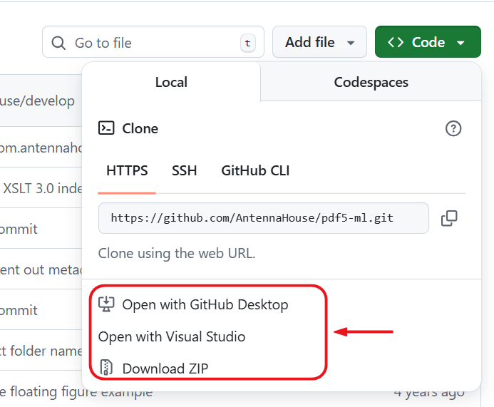
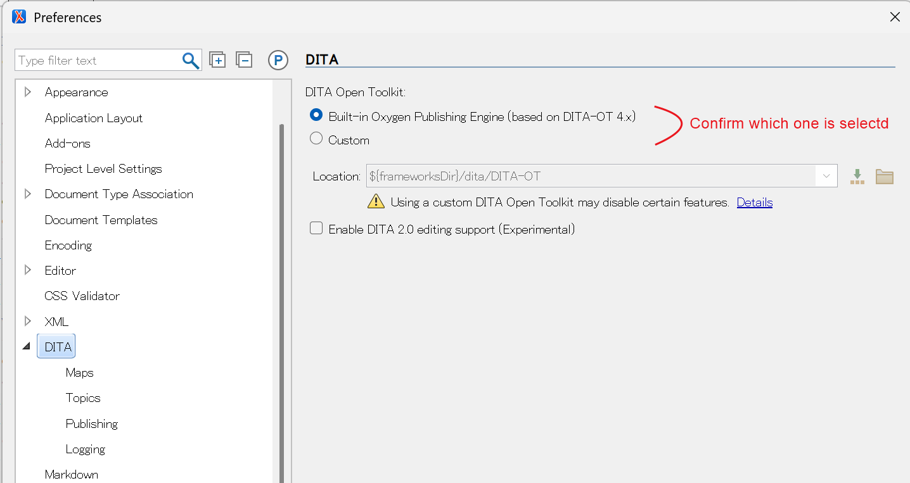
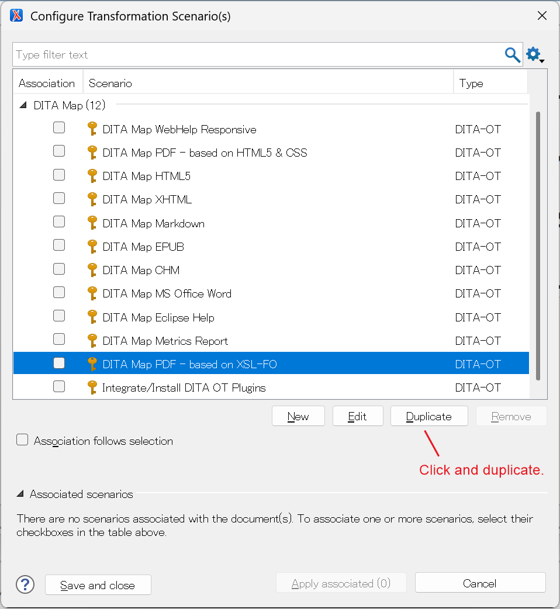
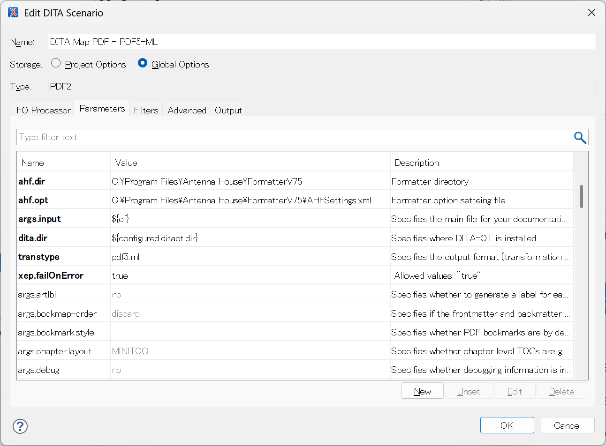
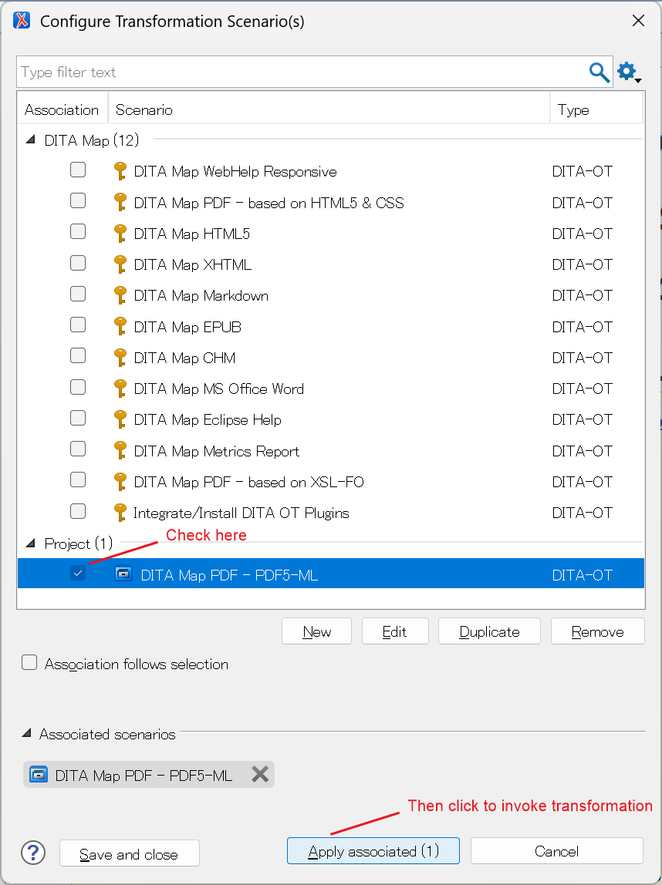
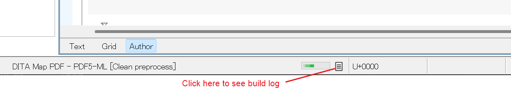

Integrating PDF5-ML with oXygen XML Editor
Feb, 2025. Antenna House, Inc.
Revision
| Date |
Contents |
| Nov 15, 2016 |
First version. |
| Feb 2, 2026 |
Update the description. |
Contents
This document describes how to integrate PDF5-ML plug-in with oXygen XML Editor.
Download or clone PDF5-ML plug-in from GitHub repository into your local file system.
[Fig.1] Downloading or cloning PDF5-ML plug-in

Open your oXygen XML Editor DITA setting by clicking [Options]-[Preferences] and select [DITA]
[Fig.2] Confirming which DITA-OT is selected.

Confirm your oXygen XML Editor DITA-OT folder. (Abbreviated as "[DITA-OT]")
| DITA Open Toolkit |
Toolkit location |
| Bult-in DITA-OT Publishing Engine (Based on DITA-OT 4.3.x) |
[oXygen Install Folder]/frameworks/dita/DITA-OT
|
| Custom |
Specified location
|
Copy "com.antennahouse.pdf5.ml" folder from the download into the [DITA-OT]/plugins
folder.
☞ NOTE: This operation needs administrator authority.
- Invoke oXygen XML Editor with administrator authority.
If you use Windows, select oXygen XML Editor icon in the desktop and from context
menu select "Run as administrator".
- Open any ditamap file.
- Click [Document]-[Transformation]-[Configure Transformation Scenario(s)...]
- Check [Integrate/Install DITA OT Plugins].
- Click [Apply associated(1)] button.
Following is the sample integration log.
Executing:
"C:\Program Files\Oxygen XML Editor 28.0\frameworks/dita/DITA-OT/bin/dita.bat" -v --install
The process finished with exit code: 0
-
From oXygen XML Editor Configure Transformation Scenario, duplicate the "DITA Map
PDF - based on XSL-FO".
[Fig.3] Duplicate the "DITA Map PDF" Schenario.

-
Modify the duplicated scenario
- Modify name from "DITA Map PDF - based on XSL-FO - Copy" to "DITA Map PDF - PDF5-ML".
- Select "Project options" or "Global options" according to your decision. If the former is selected, it can be used
only this project. If the latter is selected it can be used from any project.
- Modify "transtype" parameter to "pdf5.ml".
- Add "ahf.dir" parameter and set your Antenna House Formatter install folder.
- [Optional] Add "ahf.opt" parameter and set your favorite Antenna House Formatter option
setting file path.
[Fig.4] Edit transformation scenario.

☞ NOTE: For more details about Antenna House Formatter setting file, refer to Option Setting File.
- Invoke oXygen XML Editor and open any ditamap file which you want to generate PDF
file.
- Click [Document]-[Transformation]-[Configure Transformation Scenario(s)...]
- Select "DITA Map PDF - PDF5-ML" scenario.
- Click [Apply associated]
- The ant will be invoked and if there is no error, the generated PDF file will be opened
after build process.
[Fig.5] Run transformation scenario.

☞ NOTE: By clicking following point shows the build log in the oXygen XML Editor Windows.
[Fig.6] Show build log button.

< END OF DOCUMENT >